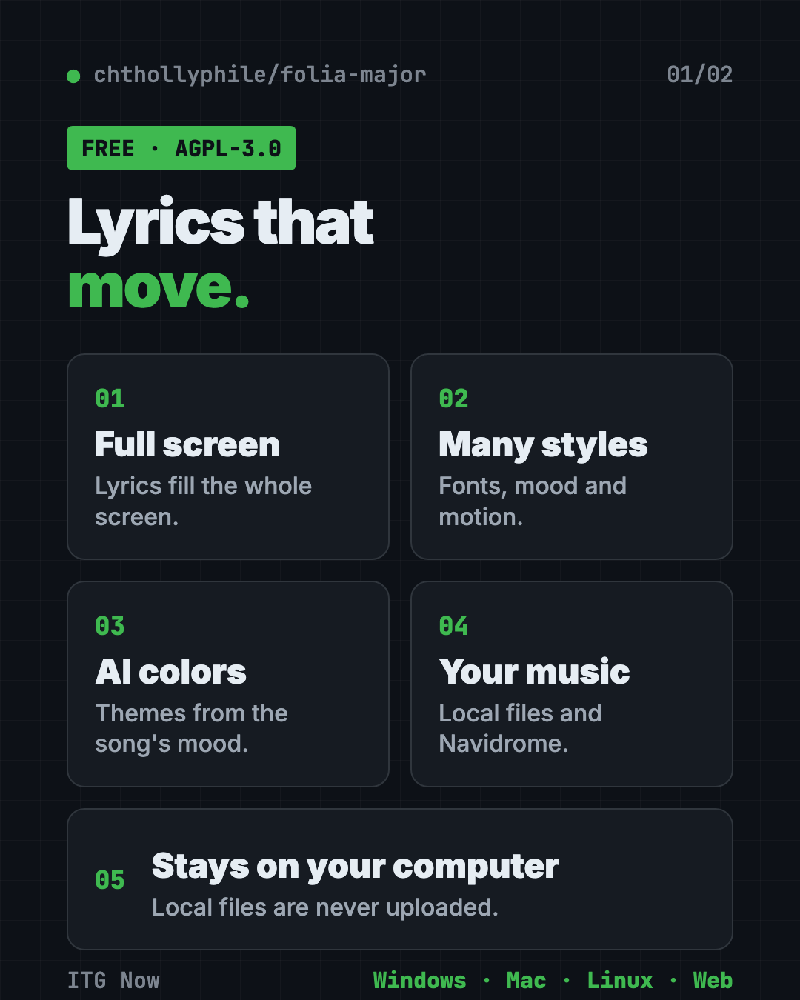
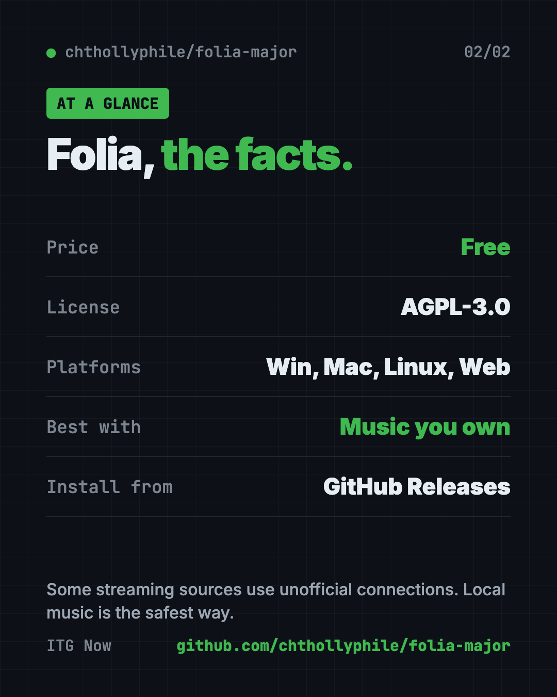

Folia: Free Animated Lyrics Music Player (2026)
- Published 19 Oct 2026
- 6 min read
- License AGPL-3.0
- By the ITG Now team
Folia is a free animated lyrics music player. Instead of a small box of lyrics, it fills your whole screen with lyrics that move, glow and change style with the song.
It works with your own music files, Navidrome servers and several streaming services, on Windows, Mac and Linux. Here's what it does, who it's for, the honest caveats and how to start.
Key takeaways
- Free and open source. AGPL-3.0 license, about 7.9K GitHub stars on October 19, 2026.
- Full-screen moving lyrics. Many animation styles, each with its own fonts and mood.
- AI color themes. It can make a background and colors from a song's mood and lyrics.
- Your music stays yours. For local files it keeps the index on your computer and never uploads the files, says the README.
- Read the legal note. Several streaming sources lean on community-made music APIs, which we read as unofficial. Local music is the safest way to use it.

What is Folia?
Folia is a music player built around one idea: lyrics should feel like a music video. Its makers call it "Lyrics Reimagined."
You play a song and the lyrics take over the screen, line by line (or word by word when the lyrics have word timing), with motion and color. It's a desktop app for Windows, Mac and Linux. There's also a web version you can run in a browser or add to your phone's home screen.
How does the animated lyrics music player work?
Folia finds the song, finds its lyrics, and animates them in time with the music.
- It gets the music. From files on your computer, a Navidrome server (your own music server at home), or a supported service.
- It matches the lyrics. For your own songs it looks up lyrics and album art online and matches them for you. You can fix a wrong match by hand.
- It animates them. Pick a style. Each one has its own fonts, mood and settings, and it fits any window size.
It also reads lyric files you already have, like .lrc files saved next to a song, including word-by-word timing.
What can you play in Folia?
- Your own music files. Import a folder. The README says Folia keeps the list on your computer and never uploads the files.
- Navidrome. If you run your own music server, Folia can play from it.
- Streaming services. The README lists NetEase Cloud Music, Kugou and QQ Music. The desktop app adds YouTube Music, Spotify and Bodian Music.
- Other players. With a helper called Now Playing, Folia can show full-screen lyrics for a song playing in another app.
Extras: mods and sync
Folia has two optional extras for curious users.
- Mods (experimental). On the desktop app you can add new lyric animations, backgrounds and buttons. Mods from the official market show as Verified, early-access ones as Preview, and third-party mods without a signature as Unverified. They are off until you turn them on in Settings.
- Sync server. You can host a small sync server yourself, so your appearance settings and AI color themes follow you to every device. The README suggests Cloudflare Workers, Docker or plain Node.js.
Neither is needed. The animated lyrics music player works fine without them.
Who should use Folia?
- Music lovers who want lyrics to look beautiful, not like a spreadsheet.
- Creators making lyric-style videos or a mood screen for a stream.
- People with big music libraries at home or on a Navidrome server.
- Language learners who sing along and follow the words.
It's not for you if you only want a simple, light player with no extras.
Is Folia legal and safe?
The app itself is open source. Here's the project's legal note, plus our own caution.
- Unofficial connections (our reading). The README credits community-made programming interfaces (the plumbing apps use to talk to a service) for several streaming sources. We read those as unofficial, so they may break or go against a service's rules.
- Personal use only. The README says the code is for personal study and non-profit testing, not commercial use. Copyright in streams, lyrics and album art belongs to their owners.
- Built with lots of AI help. The makers say the project was developed with extensive AI assistance and may still have subtle problems.
- Mods are trusted code. Optional mods (add-ons) are off by default. You confirm each one before it turns on, and verified ones carry a signature.
Our advice: use it with your own music files or your own Navidrome server, and support artists through official services.
Folia at a glance
| Price | Free |
| License | AGPL-3.0 |
| Platforms | Windows, Mac, Linux, plus a web app |
| Best for | Full-screen, animated lyrics for music you own |
| Extras | AI color themes, mods, optional sync server |

How to install Folia
These are the README's official options.
Heads up: Prefer the project's GitHub Releases page and the official options below. The README is mostly in Chinese; an English version (README.en.md) is in the repo.
- Open the Releases page and download the installer for Windows, Mac or Linux.
- Install it and open Folia. The desktop app includes everything it needs.
- Import your music folder, then pick a lyrics style.
Other ways from the README: Arch Linux users can install folia-major-bin from the AUR. A community Flatpak exists. For phones, deploy the web version and add it to your home screen, or try the separate community Android port.
Let Claude or Codex set it up for you
Paste this into Claude Code or Codex:
Help me install Folia from its official GitHub Releases page only
(github.com/chthollyphile/folia-major). Tell me which file to download for my
computer, then walk me through importing my local music folder and choosing a
lyrics style. Don't connect any streaming account.
What are Folia's limits?
- Mostly Chinese docs. Many guides link to Chinese pages, so expect some translating.
- Streaming can break (our view). Community-made connections may stop working at any time.
- Heavier than a basic player (our view). We expect the animations and AI themes to use more of your computer than a simple player.
For another free media tool, see our OpenReel guide, a free online video editor. Or browse Recordly for screen recording.
Our take
Folia is the prettiest way we've seen to show lyrics on a big screen. Use it with your own music library or Navidrome and it's a joy.
Skip the unofficial streaming sources if you want to stay safe, and remember it's a hobby project built with lots of AI help.
FAQ
Is Folia free?
Yes. Folia is free and open source under the AGPL-3.0 license.
Does Folia upload my music?
No. For local files, the README says Folia stores its index on your computer and never uploads the file contents.
Does Folia work on a phone?
Not as an official app. You can deploy the web version and add it to your phone's home screen, or try the separate community Android port.
Can Folia play Spotify?
The README says the desktop app supports Spotify, YouTube Music and Bodian Music, alongside local files and Navidrome.
Is Folia safe to install?
Prefer the official GitHub Releases page or the official options in the README. Optional mods are off by default and need your confirmation before they run.
Get Folia: github.com/chthollyphile/folia-major · Stars: about 7.9K on October 19, 2026 (GitHub API)
More free voice and audio tools
- VoiceStudio VoiceStudio is a free ElevenLabs alternative. Clone a voice, dub videos and turn text into speech on your own Mac, Windows or Linux computer.
- OpenReel OpenReel is a free online video editor with no watermark. Cut clips, add captions, mix music and export up to 4K, right in your web browser.
- Brag Brag is a free AI launch video maker. Type one command in Claude Code or Codex and it turns your project into a short video with music and share text.
- Meetily Meetily is a free AI meeting note taker. It transcribes your calls live and writes summaries on your own computer, so recordings never have to leave it.
- Open Notebook Open Notebook is a free NotebookLM alternative you run yourself. Chat with your PDFs and videos, get cited answers, and turn notes into podcasts.
- Handy Handy is a free offline voice typing app. Press a key, talk, and your words appear in any app on Mac, Windows or Linux. Your voice stays on your computer.
Latest AI news
- Meta gives away its big Muse Spark AI for free
- OpenAI brings its AI models to Google Cloud
- SimReady Central: free 3D asset library for robotics
- NVIDIA brings local AI lineup to Europe
Keep reading

VoiceStudio: Free ElevenLabs Alternative
VoiceStudio is a free ElevenLabs alternative. Clone a voice, dub videos and turn text into speech on your own Mac, Windows or Linux computer.